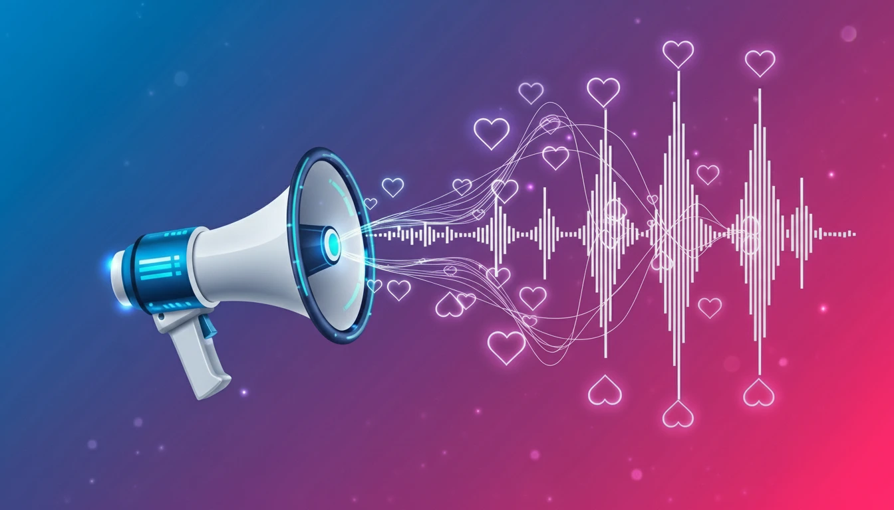

Influencer Marketing Guide: How to Run Campaigns That Convert (2025)

Traditional advertising is dead. People don't trust brands—they trust people. That's why influencer marketing has exploded. But throwing money at creators and hoping for the best isn't a strategy. Here's how to run campaigns that actually deliver ROI.
What is Influencer Marketing?
Influencer marketing is when you partner with individuals who have an engaged audience to promote your product or service. The key word here is engaged. A million followers mean nothing if those followers don't care.
Step 1: Define Your Campaign Goal
What do you actually want? Be specific. Don't say "brand awareness." Say "get 10,000 people to our product launch page." Common goals:
- Awareness: Reach a new audience.
- Consideration: Drive traffic to your landing page.
- Conversion: Generate sales using a promo code.
Step 2: Find the Right Influencers
Don't just chase follower count. Look for:
- Audience Alignment: Do their followers match your buyer persona?
- Engagement Rate: Aim for 3-5% engagement on posts (likes + comments divided by followers).
- Authenticity: Does their content feel genuine, or is every post a sponsored ad?
Pro Tip: Micro-influencers (10k-50k followers) often deliver better ROI than mega-influencers because their audiences are more niche and engaged.
Step 3: Craft a Winning Pitch
Influencers get dozens of pitches daily. Stand out by:
- Mentioning a specific piece of their content you loved.
- Explaining why your product is a fit for their audience (not just your brand).
- Being upfront about compensation (cash, free product, or affiliate commission).
Step 4: Give Creative Freedom
The worst thing you can do is hand them a script. Their audience follows them for their voice, not yours. Provide brand guidelines and key talking points, but let them tell the story in their own way.
Step 5: Track Performance
Use trackable links (UTM parameters) and unique promo codes to measure impact. Track:
- Reach: How many people saw the content?
- Engagement: Likes, comments, shares, saves.
- Clicks: How many visited your site?
- Conversions: How many bought?
Conclusion
Influencer marketing works when done strategically. Find the right people, give them freedom, and measure everything. When executed correctly, it's one of the highest ROI channels available.
Ready to expand your marketing mix? Learn about Affiliate Marketing strategies.